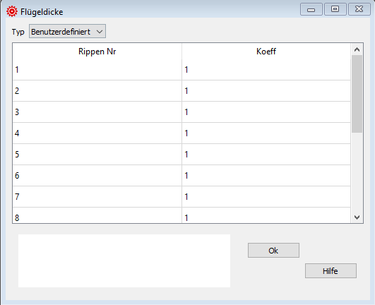

Flügeldicke¶
In diesem Fenster kannst Du die Profildicke verändern. Die Definition passiert pro Rippe.
Übliche Werte sind:
1.0: die Profildicke entspricht der Profile Datei
0.0: an den Flügelenden
{kind=link}
Rohdaten:
*******************************************************
* 30. AIRFOIL THICKNESS MODIFICATION
*******************************************************
1
1 1.0
2 1.0
3 1.0
4 1.0
5 1.0
6 1.0
7 1.0
8 1.0
9 1.0
10 1.0
11 1.0
12 1.0
13 1.0
14 0.0
Typ¶
Flügeldicke ist eine optionale Konfiguration.
Wenn Du diese Konfiguration nicht nutzen willst, dann setze Typ auf keine.
Rippen Nr¶
Rippen Nummer für die der Koeffizient definiert wird.
Die Zeilen werden aufgrund der Anzahl Rippen im Basisdaten Fenster automatisch konfiguriert.
Koeff¶
Koeffizient welcher die Dicken-Modifikation beschreibt.
0.0: Zellendicke = 0 (typisch für das Flügelende)
1.0: Zellendicke wie in der Profildatei definiert
>1: Grössere Flügeldicke als in der Profildatei definiert
Eine detaillierte Beschreibung in englisch findest Du auf der Laboratori d'envol website.